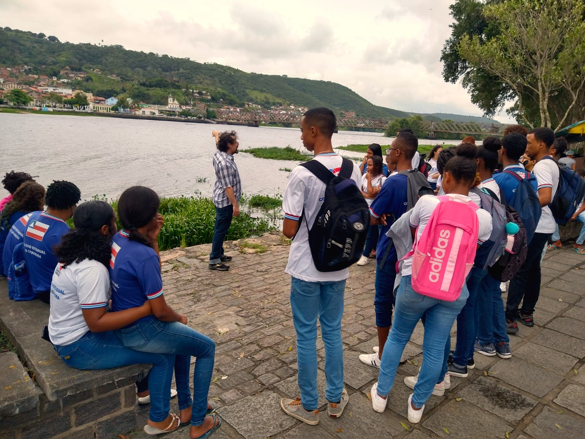
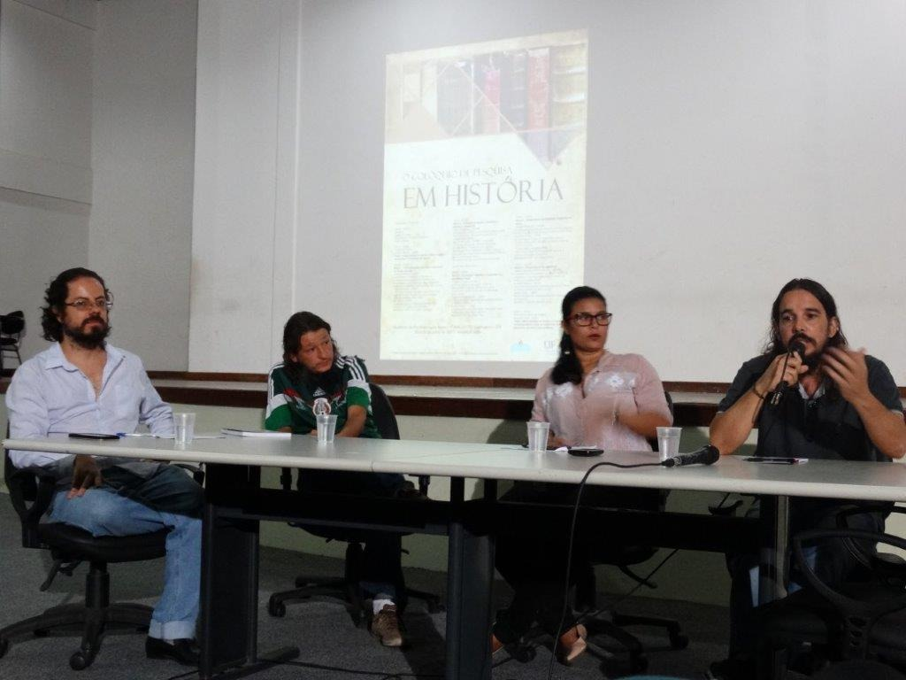
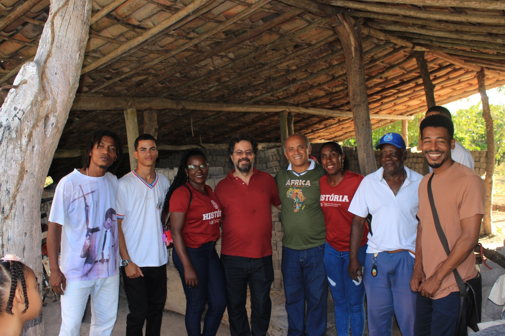

O Professor de História como Produtor
Experiências de elaboração de materiais didáticos de História – Recôncavo da Bahia (2014–2025). Cachoeira: Roda de Histórias, 2026.

Memorial 20 anos · Perfil docente
Ensino de História · História e Literatura · História Cultural do Brasil República

Trajetória no curso
Docente efetivo do Curso de História da UFRB desde 2009, Leandro Antonio de Almeida desenvolve atividades ligadas ao Ensino de História, à História e Literatura e à História Cultural do Brasil República. Ao longo de sua atuação no curso, exerceu funções de docência, pesquisa, orientação, supervisão de estágio, extensão, coordenação de laboratório e coordenação de programa de extensão, incluindo o PIBID.
Seleção do professor
Entre as diferentes produções associadas à sua trajetória na UFRB, Leandro Antonio de Almeida selecionou para o Memorial os cinco trabalhos abaixo. A relação mais ampla de livros vinculados ao docente permanece disponível na seção Livros, ao final desta página.
Experiências de elaboração de materiais didáticos de História – Recôncavo da Bahia (2014–2025). Cachoeira: Roda de Histórias, 2026.
Reflexões sobre o humor em toda parte. Organização de Elias Thomé Saliba, Thaís Leão Vieira e Leandro Antonio de Almeida. São Paulo: LiberArs, 2021.
Mapa didático digital dedicado à história das empresas fumageiras do Recôncavo da Bahia.
Site do grupo de pesquisa “Ensino de História no Recôncavo da Bahia”, reunindo materiais didáticos produzidos pelo docente e por seus orientandos, além de produção acadêmica.
“Ficção policial e humor na Primeira República (1907–1928)”. Revista de História, n. 179, 2020.
Ensino, extensão e pesquisa

Projeto voltado à produção de materiais didáticos e a ações para o ensino de História Local e Regional. As atividades envolveram escolas públicas do Recôncavo, pesquisa no Arquivo Público de Cachoeira e ações de orientação e formação no CAHL/UFRB.
A imagem reúne registros da preparação da pesquisa e das entrevistas com trabalhadoras ligadas às fábricas de charutos.

Atuação nas edições de 2020–2022 e 2023–2024 do PIBID História, em articulação com escolas públicas do Recôncavo. O projeto aproximou formação inicial docente, universidade e educação básica em diferentes experiências de ensino de História.

O LEHRB atuou como espaço de articulação entre ensino de História, formação de professores, produção de materiais e escolas públicas do Recôncavo da Bahia, vinculando atividades do CAHL/UFRB a experiências desenvolvidas na educação básica.
Memória visual
Registros de diferentes momentos da atuação docente de Leandro Almeida no Curso de História da UFRB, entre atividades de ensino, pesquisa, extensão e formação de professores.

Aula de campo sobre a história das fábricas de charutos e das charuteiras do Recôncavo da Bahia, realizada com alunos do Colégio Estadual de Cachoeira, no âmbito do PIBID-História UFRB e do projeto Charuteiras do Recôncavo.

Integrantes da mesa de Literatura e História do I Colóquio de Pesquisa em História do CAHL/UFRB, organizado pelo LEHRB. Da esquerda para a direita: Leandro Almeida, Nuno Gonçalves, Ana Paula Lessa e Washington Andrade.

Durante a supervisão de estagiários na atividade de campo organizada pelo prof. Luís Carlos Borges da Silva, do CEPES, Governador Mangabeira. Na foto estão, da esquerda para a direita, o estagiário Valdinei, um estudante do CEPES, a estagiária Jucélia, Leandro Almeida, prof. Borges, a estagiária Creonice, seu João, dono da olaria, e o egresso Joilson Fiúza.
Depoimento
O espaço permanece aberto para a incorporação futura de depoimento em texto, áudio ou vídeo.